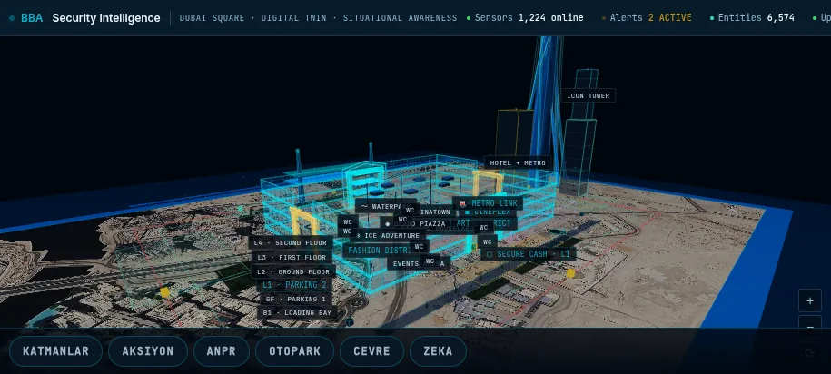
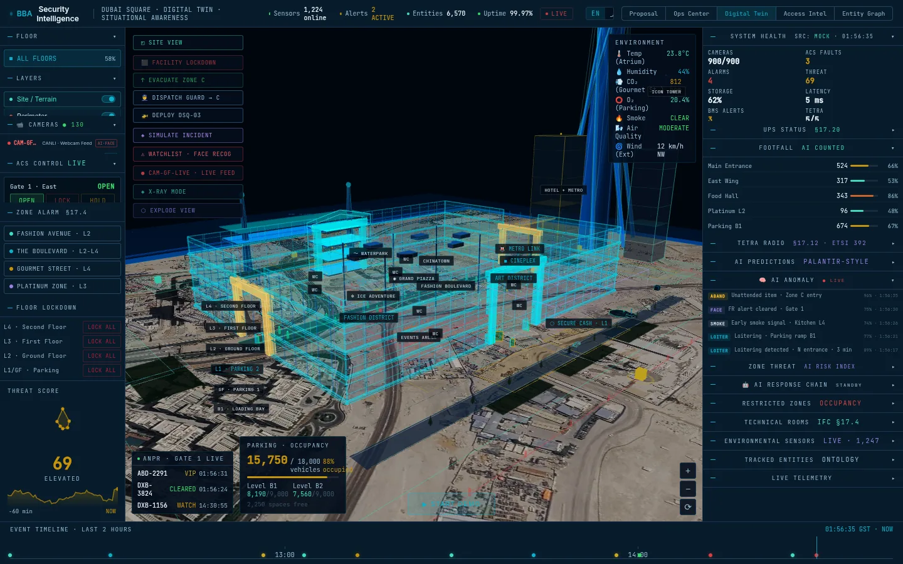
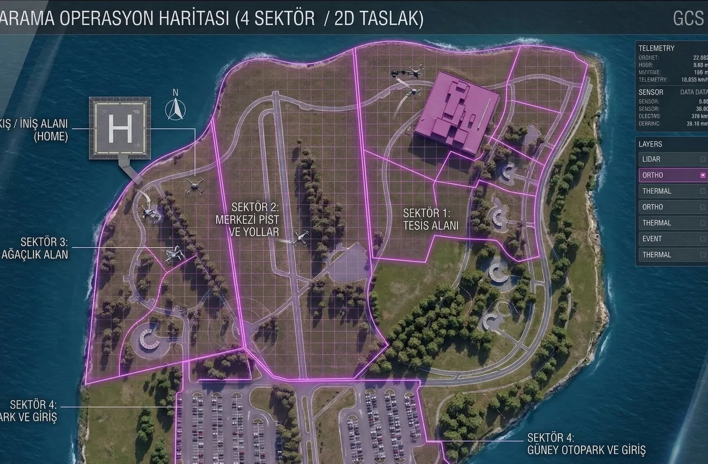
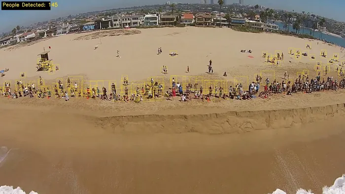
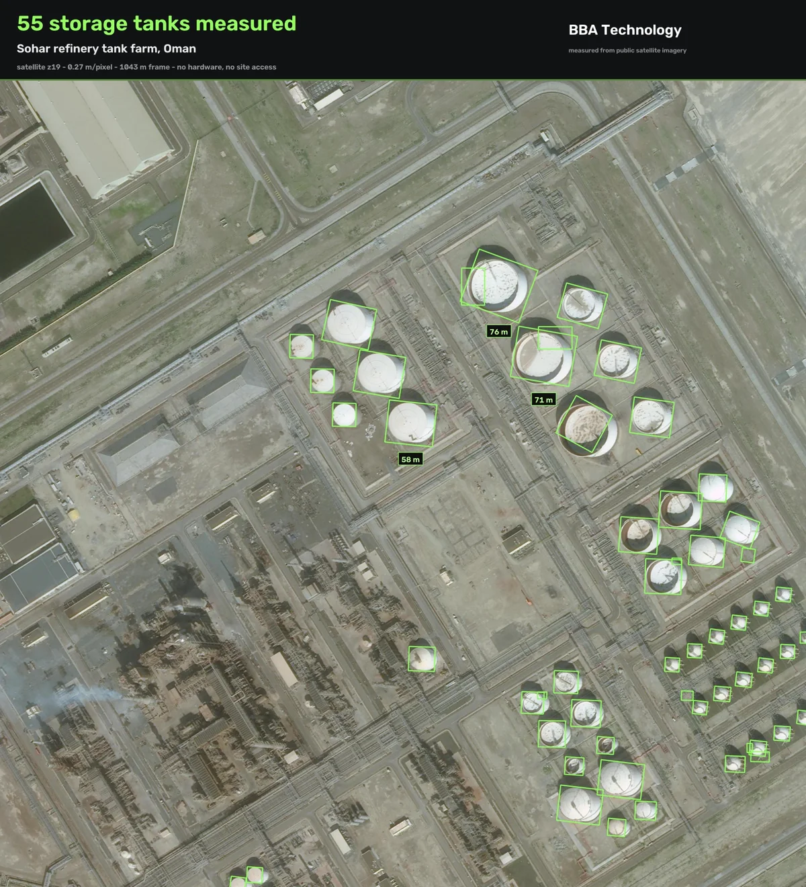
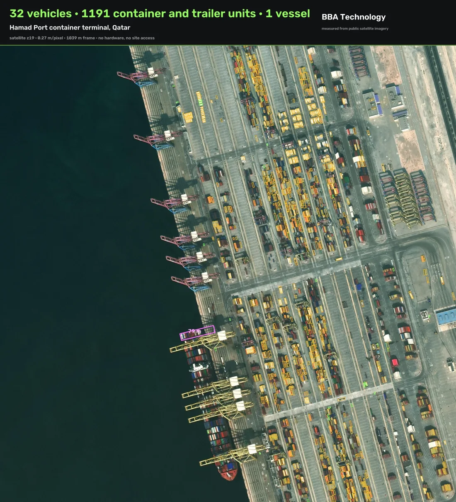
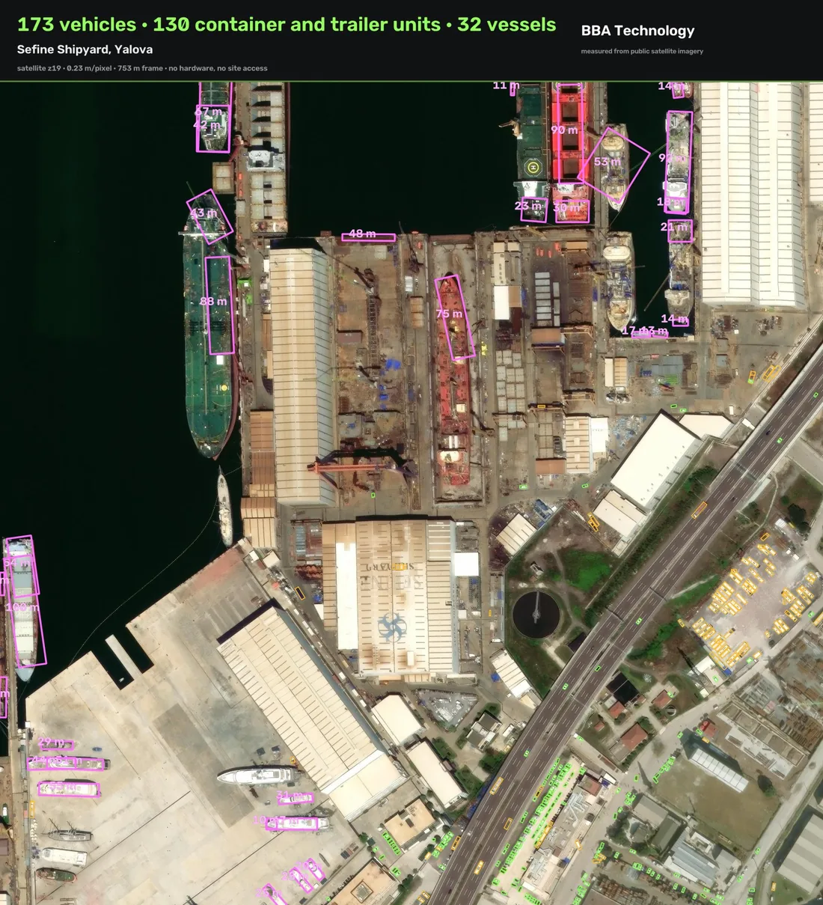

İzmir'de kurulu bir yazılım ve entegrasyon şirketiyiz. Fiziksel tesisleri işleten yapay zekâ katmanını geliştiriyoruz.


Umman, Pakistan ve Cibuti'de yeni projeler başlıyor. Merkezimiz İzmir'de, Bilişim Vadisi'nde.

Simülasyon ortamımızdan kayıt; üretimdeki komuta arayüzü çalışıyor.




Kamuya açık uydu görüntüsünden, piksel başına 0,27 metre. Donanım yok, saha erişimi yok, izin yok.
Serdar Batkan · BBA Teknoloji A.Ş. · serdarbatkan@bbateknoloji.com · +90 530 597 41 87